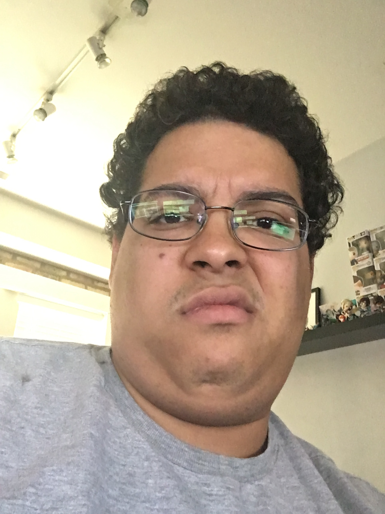

About Me
 Hello and welcome to my portfolio! My name is Joshua Joseph and I am currently going through a web development bootcamp through Northwestern University. It's still within the first two weeks, but I am happy to finally persue a career in this field in a few short months. Before this class I knew HTML and CSS. I am looking forward into learning other things to:
- Javascript
- JQuery
- Ruby on Rails
- Python
- MySQL
- SEO
- BootStrap
- And many others!
What do I like to do in my spare time, though? Video games, of course. I have been in a top 200 world raiding guild for World of Warcraft, but have retired from that scene. I have also become a grandmaster level player in Blizzard's other game: Overwatch. In World of Warcraft I played a warlock for about 7 years and in Overwatch, I main flex support, which means that I play characters like Moira, Zenyatta, and now Brigitte. If I am not playing video games I am teaching myself how to play piano, which I can't wait to explore more.